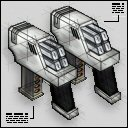

These lightweight submachine guns are devestating when used in an akimbo pair. The snUZIs make up for their lacking power with the sheer quantity of bullets fired. This makes the snUZIs effective at longer ranges, as well as close-up encounters. |